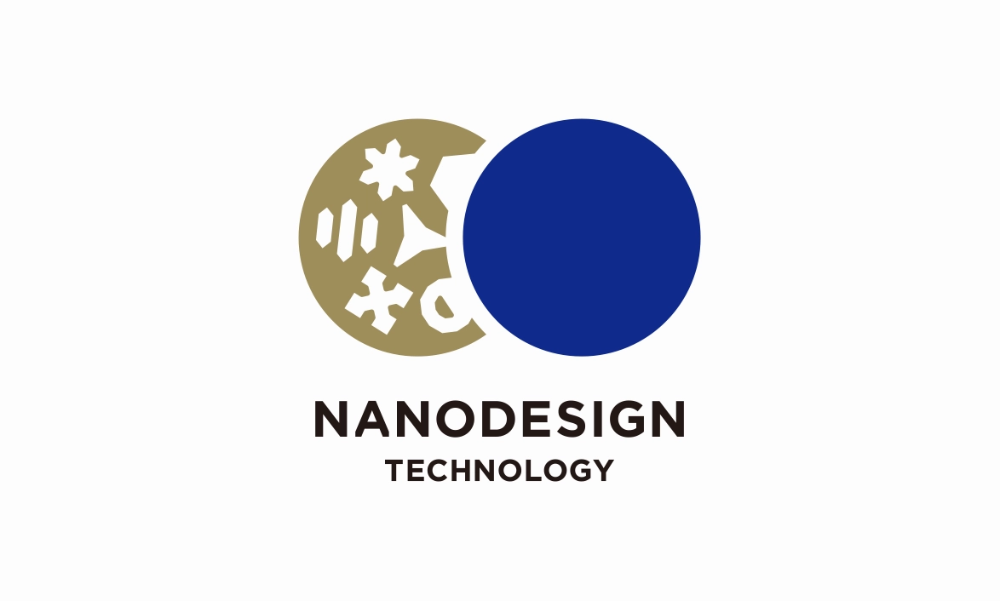

エンジニアリング開発センター
エンジニアリング要素技術を駆使して先端材料の製造プロセスを創出し、独自の生産設備を開発している専門部隊。
エンジニアリング開発センターは高分子化学をコアとする会社の中では異色の、エンジニアリングに関する研究を行うために1960年に「工務研究所」として設立され、組織改編を経て、2001年に現在の「エンジニアリング開発センター」に改称しました。
現在は第1、第2、第3開発室の3室体制で、サステナビリティ・ビジョン実現に向け、エンジニアリング基盤要素技術の研究と応用技術の開発、製造プロセスへの展開を行い、東レおよび東レグループ各社各事業の競争力強化と先端材料の創出、早期事業化に貢献しています。
研究領域・テーマ
-
社内製造プロセスの独自な機器、設備、生産技術の研究開発
長年蓄積してきた独自技術を駆使し、繊維、フィルム、炭素繊維や水処理膜モジュール製造プロセスの高性能化、高速化などを推進している。また、リチウムイオン電池、水素・燃料電池部材などの次世代エネルギー関連事業等において必要とされる先端素材と高精度加工を融合させた生産技術も開発している。
-
CAE（Computer Aided Engineering）の深化と応用技術の研究開発
CAEは、エンジニアリング技術の中核を担い、熱、流体、構造、衝撃、電磁場等の複数の数値解析技術を融合させ、社内のプロセス解析・設備設計、顧客向け製品価値創造のために活用している。近年は、熱流体解析、非線形構造解析、化学反応解析を駆使し、化工プロセスCAE分野の技術を開発、その体系化に取り組んでいる。
-
社内生産プロセスに必要な測定・検査、プロセス可視化、AI技術の研究開発
各事業分野で、製品性能の極限的な高機能化、高精度化が進み、安定した性能を実現するために、高度な品質検査技術、制御技術、物性測定技術が要求される。急速に進化するICT、IoT技術と長年培ってきた電気・計測技術を融合、深化させ、独自の測定・検査、プロセス可視化技術を開発している。
研究成果
-
 ナノデザイン
-
多層積層プロセス
-
プリフォーム賦形解析技術
研究者情報
アクセス
エンジニアリング開発センター
所在地
〒520-0842
滋賀県大津市園山3-3-6